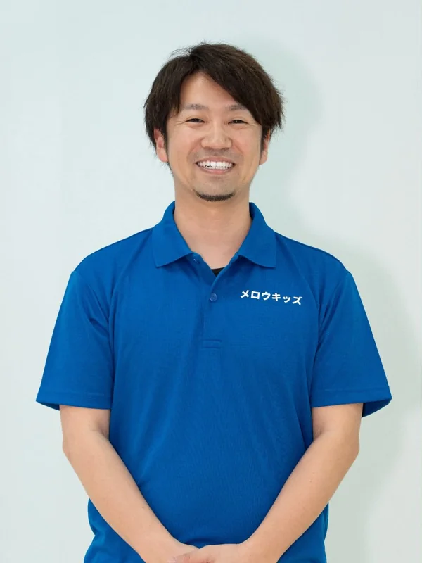

Staff
平城 修吾（しゅうご先生）
管理者／児童発達支援管理責任者／作業療法士／公認心理師

管理者児童発達支援管理責任者作業療法士公認心理師キャリアコンサルタント作業療法学修士
これまでの歩み
作業療法士として、精神科・身体障害領域の病院で10年以上勤務しました。その後 Mellow Amami 合同会社を創業し、企業の健康経営や組織開発に関する事業に取り組んできました。事業のかたわら児童発達支援センターで子どもたちの支援を学び、児童発達支援管理責任者の資格を取得。「できるだけ早い年齢から、個別で丁寧に関わりたい」という思いから、メロウキッズを設立しました。
保護者・お子さまへ
「メロウ」という言葉には、「角を取って丸くする」という意味が込められています。円熟した穏やかな家庭をつくるお手伝いができるよう、医療の知識をベースに丁寧に関わっていきます。お子さんのこと、ご家族のこと、何でも話してくださいね。
得意なこと・専門分野
- 心理・精神的なこと（公認心理師）
- 人間関係やコミュニケーション（大学院での研究）
- からだや日常生活のこと（作業療法士）
ひとことプロフィール
小宿小 → 小宿中 → 大島高校。趣味はルアーフィッシングとSUPサーフィン。スクールカウンセラー・キャリアコンサルタントとしても活動しています。